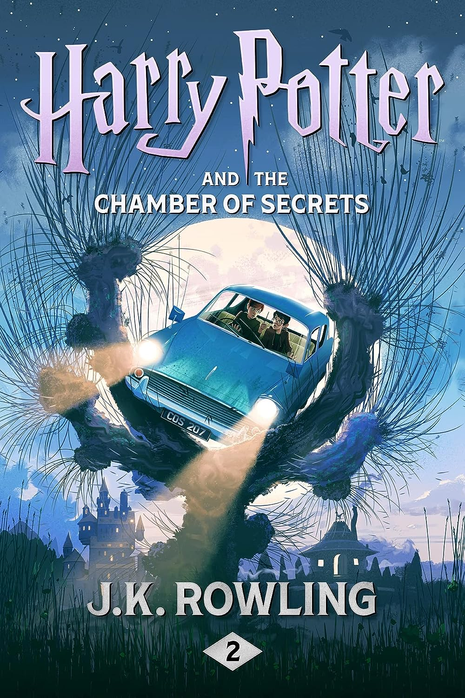
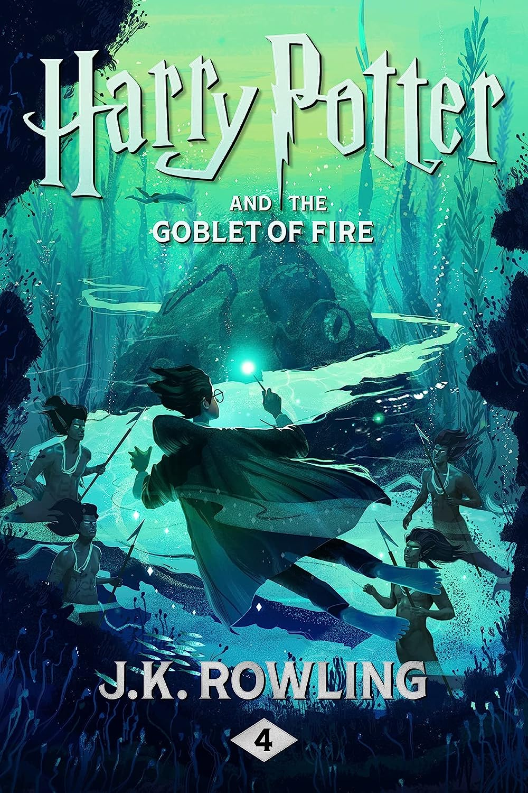
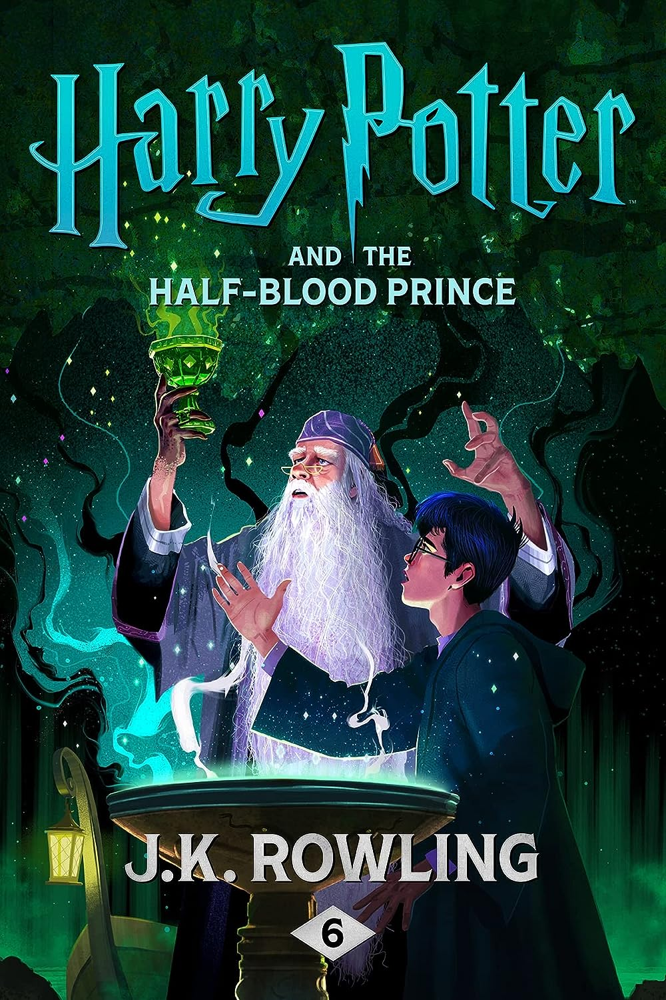
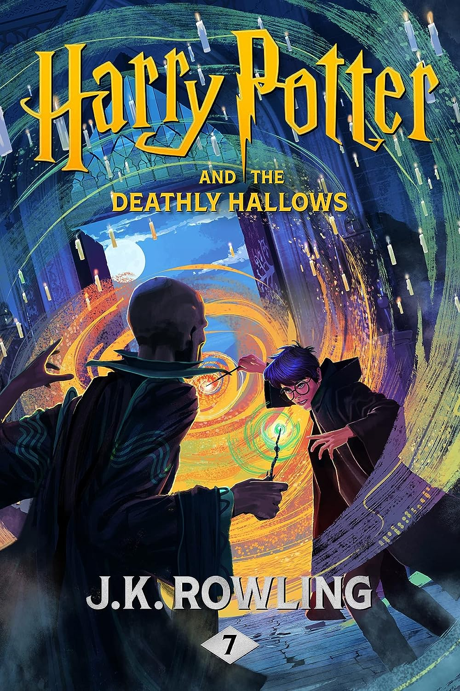

Philosopher's Stone (1997)

Harry Potter has never even heard of Hogwarts when the letters start
dropping on the doormat at number four, Privet Drive. Addressed in
green ink on yellowish parchment with a purple seal, they are
swiftly confiscated by his grisly aunt and uncle. Then, on Harry's
eleventh birthday, a great beetle-eyed giant of a man called Rubeus
Hagrid bursts in with some astonishing news: Harry Potter is a
wizard, and he has a place at Hogwarts School of Witchcraft and
Wizardry. An incredible adventure is about to begin!
Chamber of Secrets (1998)

Harry Potter’s summer has included the worst birthday ever, doomy
warnings from a house-elf called Dobby, and rescue from the Dursleys
by his friend Ron Weasley in a magical flying car! Back at Hogwarts
School of Witchcraft And Wizardry for his second year, Harry hears
strange whispers echo through empty corridors – and then the attacks
start. Students are found as though turned to stone … Dobby’s
sinister predictions seem to be coming true.
Prisoner of Azkaban (1999)

When the Knight Bus crashes through the darkness and screeches to a
halt in front of him, it’s the start of another far from ordinary
year at Hogwarts for Harry Potter. Sirius Black, escaped
mass-murderer and follower of Lord Voldemort, is on the run – and
they say he is coming after Harry. In his first ever Divination
class, Professor Trelawney sees an omen of death in Harry’s tea
leaves... But perhaps most terrifying of all are the Dementors
patrolling the school grounds, with their soul-sucking kiss.
Goblet of Fire (2000)

The Triwizard Tournament is to be held at Hogwarts. Only wizards who
are over seventeen are allowed to enter – but that doesn’t stop
Harry dreaming that he will win the competition. Then at Hallowe’en,
when the Goblet of Fire makes its selection, Harry is amazed to find
his name is one of those that the magical cup picks out. He will
face death-defying tasks, dragons and Dark wizards, but with the
help of his best friends, Ron and Hermione, he might just make it
through – alive!
Order of Phoenix (2003)

Dark times have come to Hogwarts. After the Dementors’ attack on his
cousin Dudley, Harry Potter knows that Voldemort will stop at
nothing to find him. There are many who deny the Dark Lord’s return,
but Harry is not alone: a secret Order gathers at Grimmauld Place to
fight against the Dark forces. Harry must allow Professor Snape to
teach him how to protect himself from Voldemort’s savage assaults on
his mind. But they are growing stronger by the day and Harry is
running out of time.
Half-Blood Prince (2005)

When Dumbledore arrives at Privet Drive one summer night to collect
Harry Potter, his wand hand is blackened and shrivelled, but he does
not reveal why. Secrets and suspicion are spreading through the
wizarding world, and Hogwarts itself is not safe. Harry is convinced
that Malfoy bears the Dark Mark: there is a Death Eater amongst
them. Harry will need powerful magic and true friends as he explores
Voldemort’s darkest secrets, and Dumbledore prepares him to face his
destiny.
Deathly Hallows (2007)

As he climbs into the sidecar of Hagrid’s motorbike and takes to the
skies, leaving Privet Drive for the last time, Harry Potter knows
that Lord Voldemort and the Death Eaters are not far behind. The
protective charm that has kept Harry safe until now is broken, but
he cannot keep hiding. The Dark Lord is breathing fear into
everything Harry loves, and to stop him Harry will have to find and
destroy the remaining Horcruxes. The final battle must begin – Harry
must stand and face his enemy.